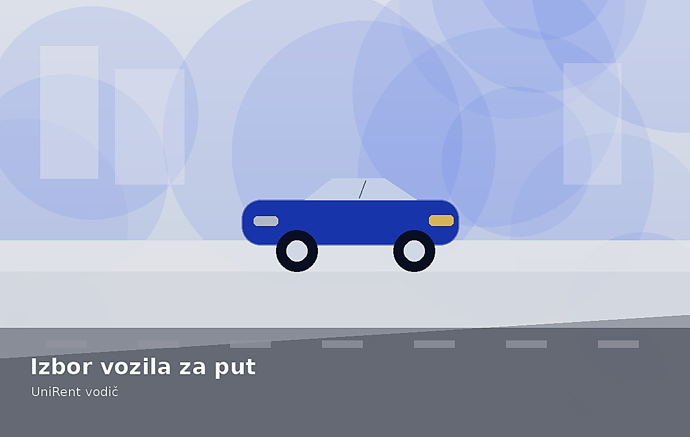
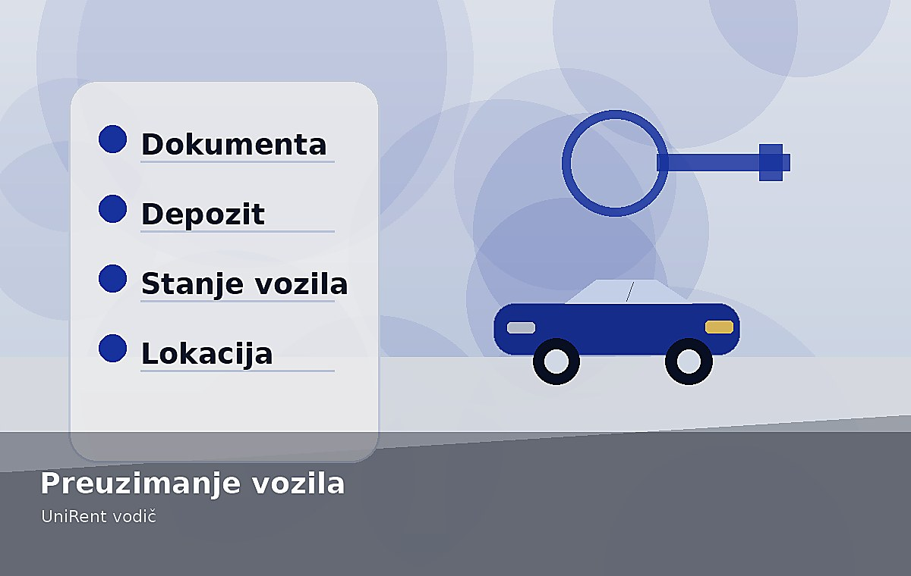
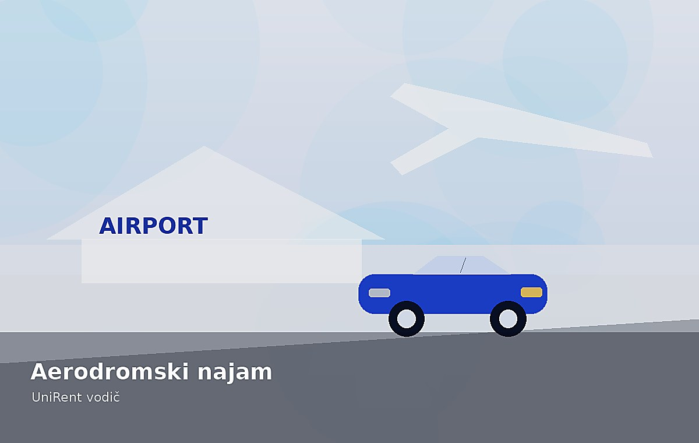
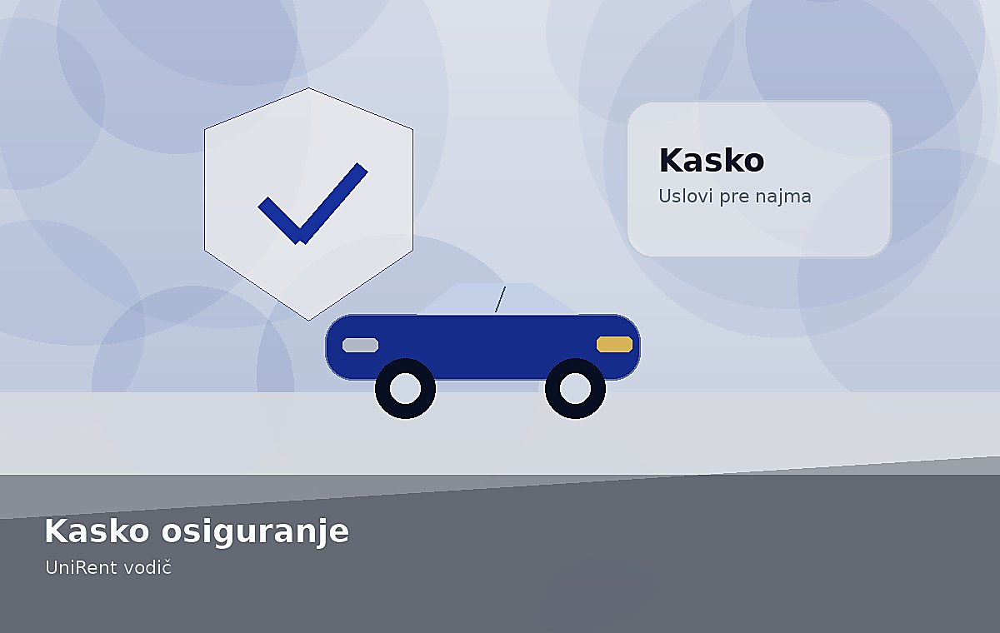
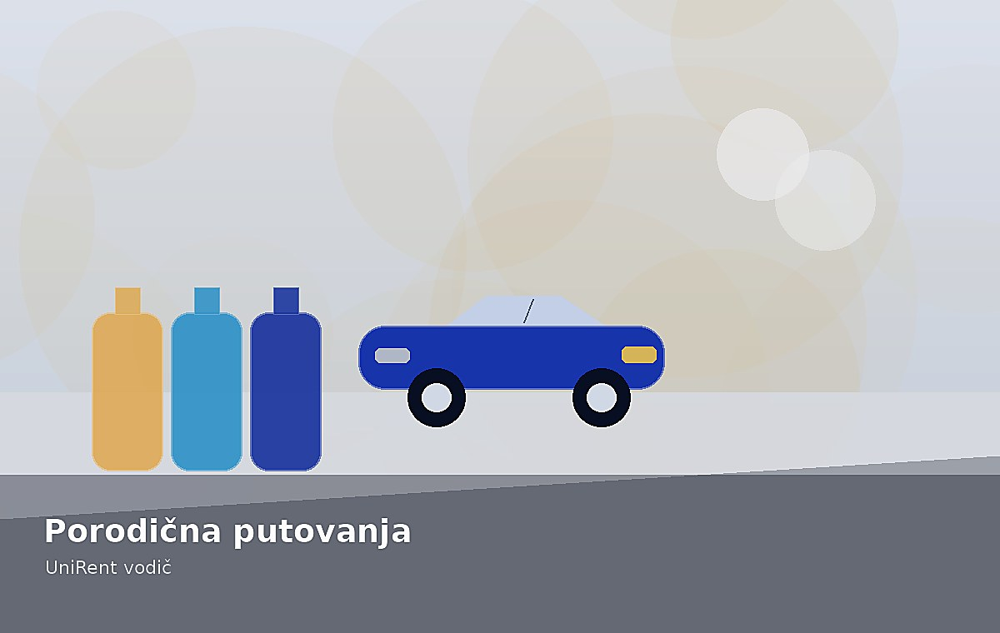

Kako izabrati pravu klasu vozila?
Najbolji izbor vozila zavisi od broja putnika, prtljaga, relacije i budžeta. Zbog toga korisniku treba dati jasne orijentire, ne samo listu modela.
- Gradska vožnja: kompaktna i ekonomična klasa.
- Porodični put: veći prtljažnik i udobnija kabina.
- Poslovni dolazak: automatik, komfor i laka aerodromska logistika.
Svi saveti
6 tekstovaKako izabrati idealno vozilo za put?
Prvo odredite namenu putovanja: gradska vožnja, poslovni sastanak, porodični vikend ili duža ruta.
Rezervišite vozilo →
Šta proveriti pre preuzimanja vozila?
Dokumenta, depozit, mesto preuzimanja i stanje automobila treba da budu jasni pre dolaska korisnika.
Pročitajte uslove →
Najam vozila na aerodromu
Za putnike koji stižu avionom najbitniji su broj leta, vreme preuzimanja i dogovorena lokacija.
Rezervišite vozilo →Bez skrivenih troškova
Transparentna cena, kilometraža i depozit direktno utiču na poverenje pre rezervacije.
Pogledajte cenovnik →
Kasko osiguranje u najmu
Korisnik treba da zna šta je uključeno, šta se dodatno naplaćuje i gde se čitaju kompletni uslovi.
Uslovi najma →
Porodično putovanje bez stresa
Za porodice su najvažniji prtljažnik, komfor, bezbednosna oprema i veća klasa vozila za duže relacije.
Izaberite vozilo →Da li mogu da rezervišem iz cenovnika?
Da. Dugme pored svake stavke u cenovniku prosleđuje naziv vozila, grupu i početnu cenu u rezervacionu stranicu.
Šta se dešava nakon forme?
Trenutno je forma statička. Pre objave treba je povezati sa mejlom, CRM-om ili backend endpointom.
Zašto je važno prikazati uslove?
Jasni uslovi smanjuju broj pitanja korisnika i povećavaju poverenje pre rezervacije.